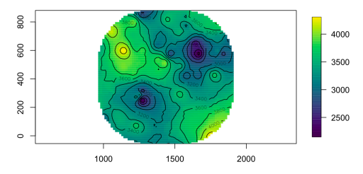
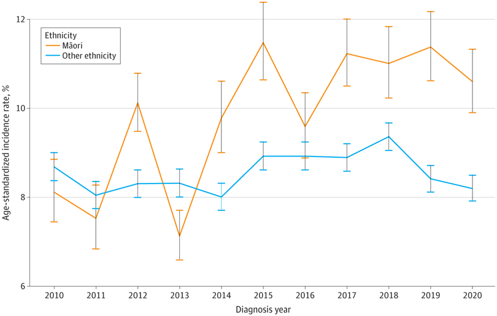
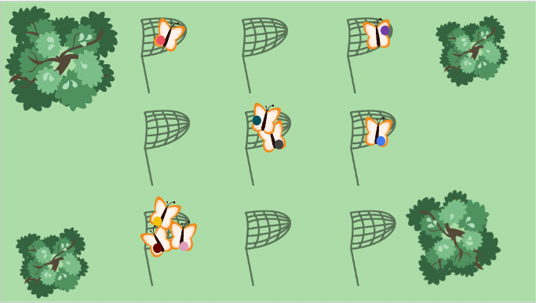
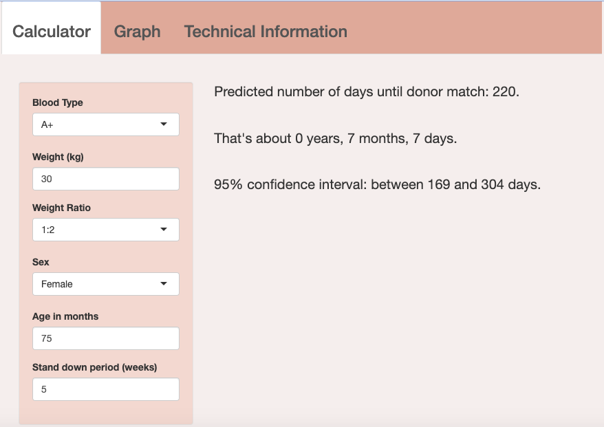
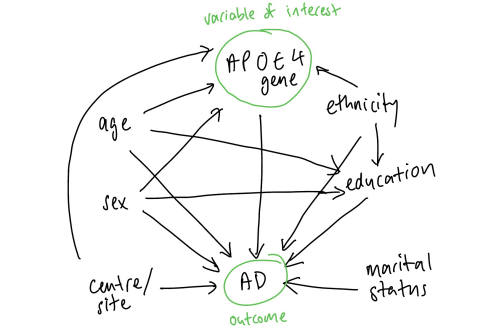
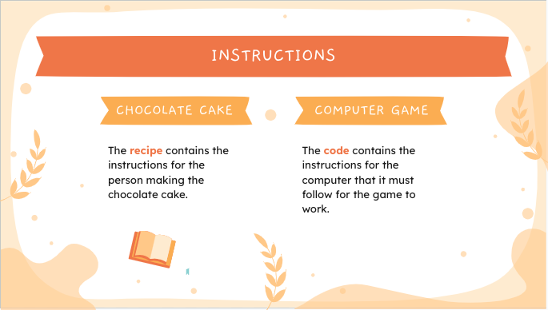
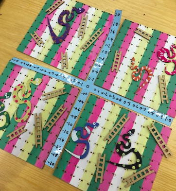

- I have a BSc and PGDipSci in Statistics from The University of Auckland (the birthplace of R programming!).
- I have only one online course left for my MSc in Statistics! I'll be finishing in November 2024, after studying part time since 2022 in addition to working full time.
- I have over eight years of programming experience and can program very confidently in R, Python, SQL, HTML/CSS, and LaTeX. I also have experience with JavaScript, MATLAB, SAS, and bash.
- My favourite areas of statistics are health and ecology, but I like to learn about anything!
- I have worked as an Information Analyst in the health sector, a Data Engineer at a digital marketing agency, and as an Analytics Engineer for a software company
specializing in R Shiny applications for the pharmaceutical industry and cancer research.
- The skills and tools I have used in my professional experience include: R (especially Shiny and the tidyverse),
Python, SQL, Excel, HTML, CSS, JavaScript, Google Cloud Platform (especially BigQuery), bash, GitHub, GitLab, Gitflow, CI/CD,
Agile development, and various statistical concepts (e.g. GLM/GLMM, ASR, time series).
- Besides completing my final MSc coursework, right now I'm learning Power BI and Python Flask. I hope to eventually learn some JS libraries and Swift too!
I love learning new tools and programming languages.
- Originally from New Zealand, I currently live in Vancouver, BC, Canada.
- Outside of work, I like to dance, draw, and hike, and I'm currently learning French!
Check out some of my projects, publications, and presentations below!

This was my dissertation project for my Master of Science in Statistics at the University of Auckland.
I created a simulation program to produce realistic acoustic capture-recapture data for the purpose of testing a new R package.
I received an A+ grade.

I co-authored this study to investigate differences in survival and mortality in patients with head and neck cancer in New Zealand.
My involvement included conducting survival analysis, calculating age standardized rates, determining sample size, and more.
Citation: Weaver A, Twine S, Bather M, Dowley A, Slough CM. Ethnic Disparities for Survival and Mortality in New Zealand Patients With Head and Neck Cancer. JAMA Netw Open.2024;7(6):e2413004. doi:10.1001/jamanetworkopen.2024.13004

I gave this presentation at the Cascadia R Conference in 2023 in Seattle, Washington, about the basics of
spatially explicit capture-recapture (SECR), and how to use R for SECR modelling.

I created this R Shiny app for the Berlin Heart Study, to estimate the wait time for a heart donor match
for pediatric patients in New Zealand.
The estimation algorithm, which I developed myself, uses the following techniques:
- Expected value of a geometric distribution
- Poisson regression
- Quantile regression with WHO childhood growth standards
- Clopper-Pearson confidence intervals
While this app isn't available publicly, a screen recording demonstration can be seen at the link below.

In 2022, I took STATS 770: Introduction to Medical Statistics as part of my MSc. The project I chose
for this course was to examine the relationship between the number of APOE4 gene alleles and the
presentation of Alzheimer's Disease and its various stages of cognitive decline.
I received 97% for this report, and an A+ for the course overall.

This presentation was given to primary school students at Bailey Road School for their Digital Media unit.

I am passionate about math education, and I have tutored high school math students since 2014, both privately and at two different businesses.
During this time, I have noticed some keys topics that many students struggle with. One common difficulty
is finding the gradient of a line when the x- and y-axes aren't of a typical 1-1 scale.
In 2019, for a university course about math education, I made a math version of Snakes & Ladders to help students with this issue.
The project received an A+ grade and is now used as an example of project work for students enrolled in the course.
I used a laser cutter and 3D printers, as at the time I worked as a Creative Technologist at a maker space.
In 2024, I have resurrected this project and have begun some improvements and refinements. I hope to eventually learn Swift so that I
can make it into a phone/tablet app.
Watch this space for updates!